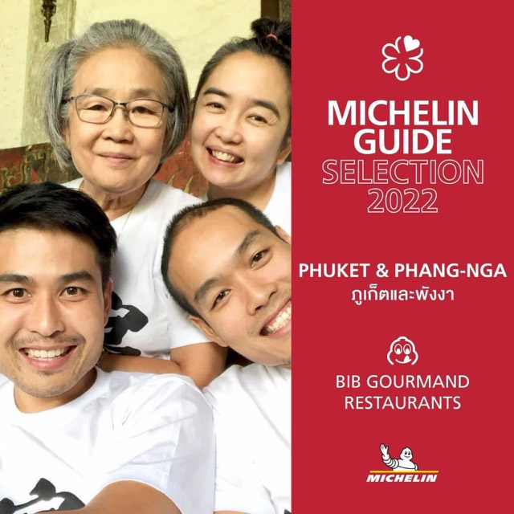
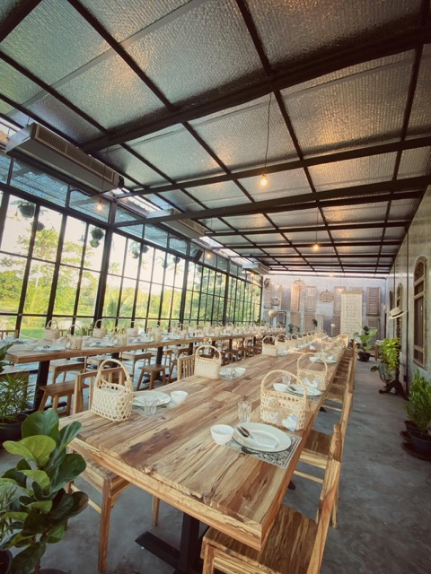
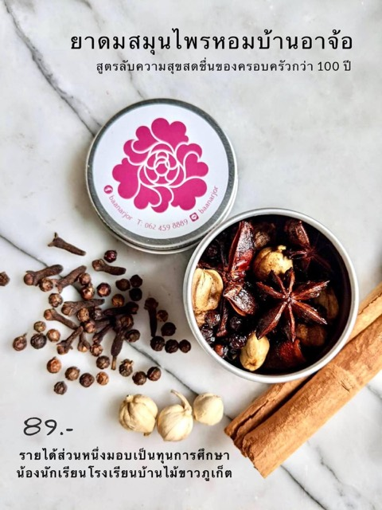

Record for 2021 2564
16 entries
Toh Daeng at Baan Ar-Jor earns its first MICHELIN Bib Gourmandaward

+1 more photos on the entry page
One month since Wo Ai Ni opened, already hosting varied eventspress

+2 more photos on the entry page
Baan Ar-Jor launches herbal inhalers to support staff and studentscommunity
